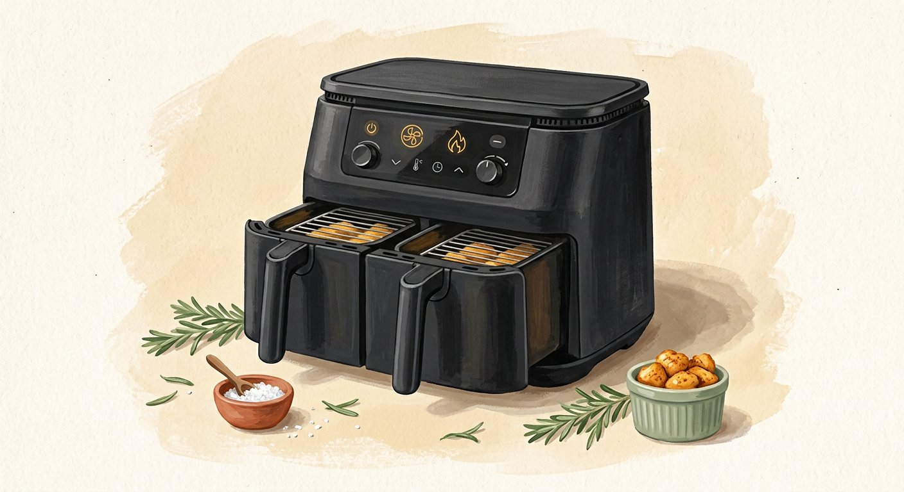

Dual-basket format
CHEFMAN 6 Quart Dual Basket Air Fryer Oven
Two independent 3-quart baskets and a digital control panel. The first question this format asks of you: do you regularly cook two things at once?
View listing on Amazon